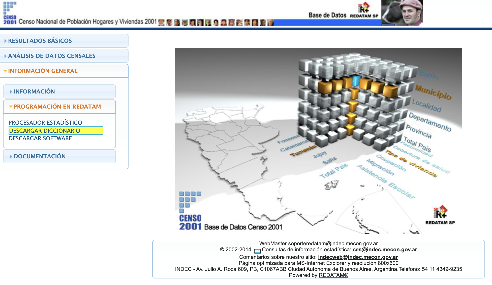
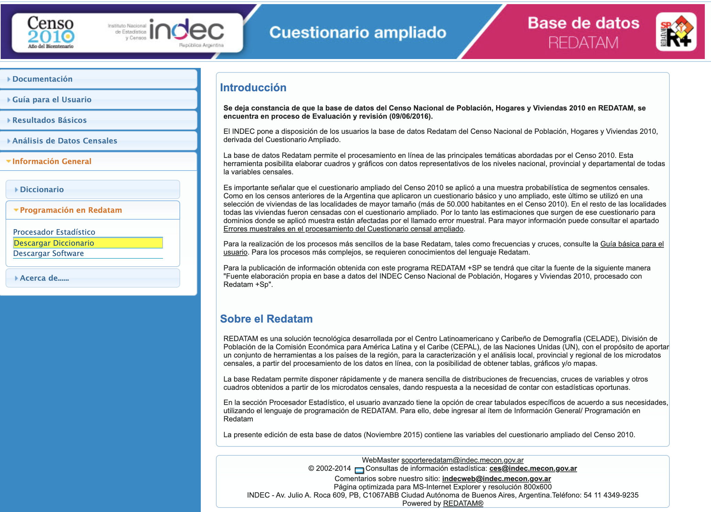

3.3 Censos modernos: acceso diferencial
En el estudio de la realidad social y económica en Argentina los censos de población cumplen funciones esenciales para el funcionamiento de los sistemas estadísticos nacionales, la implementación de servicios gubernamentales, la asignación de recursos públicos, la inversión privada y la investigación académica. Como se mencionó previamente, el gran valor socio-histórico de los censos se debe a su vez al hecho de que fueron prácticamente la única fuente de datos secundaria sobre cuestiones sociales durante mucho tiempo en Argentina. Además de sus conocidas bondades para poder examinar los fenómenos a nivel de áreas geográficas menores o para subpoblaciones pequeñas, los censos han sido utilizados habitualmente para el análisis comparado entre países o de un mismo país a lo largo del tiempo.
El INDEC ha modificado las herramientas que ofrece a usuarios para el acceso a las bases de datos oficiales de los censos de población modernos. Hace relativamente unos pocos años que es posible acceder a microdatos y bases completas en línea de algunos de los censos modernos: el de 2001 y 2010, a través de sitio web del INDEC. Sin embargo, estas bases se publican en distintos formatos, y prácticamente sin una descripción de los metadatos, las variables corregidas, o un análisis de calidad, que quedan, en su gran parte, a criterio de los usuarios. En Argentina, los investigadores tienen que evaluar por su cuenta la utilidad de estos datos.
La formas (cambiantes) de publicar del INDEC son un aviso para los profesionales e investigadores con respecto a las herramientas disponibles para extraer datos públicos. En esta sección del, revisamo las diferentes formas de extraer o construir datos de las bases de datos del INDEC, al menos, conocidas. Las siguientes líneas proporcionarán instrucciones sobre cómo utilizar diferentes herramientas para la extracción de datos públicos.
En esta parte del capítulo se explora como:
- Adquirir datos de los censos de población modernos en Argentina, a través de diferentes alternativas:
- Generar y analizar datos de la muestra de microdatos de uso público del censo decenal de Argentina (PUMS) del INDEC y/o IPUMS con
ipumsr.
Los lenguajes de programación como R, aunque menos fáciles de usar y con una interfaz de usuario más disuasiva, poseen la capacidad de reproducir análisis repetidamente con conjuntos de datos muy diferentes, y tienen un gran impacto en la productividad, al tiempo que ofrecen algunas de las ventajas del código: control de versión y ciencia abierta. Por el contrario, las herramientas de apuntar y hacer clic con el mouse para la extracción, el análisis o la visualización de datos son populares y más fáciles de usar, pero no son reproducibles ni escalables. Si los usuarios están realizando un trabajo que no es tan complejo o no se basa en una gran cantidad de datos, no es necesario utilizar un entorno de programación. De cualquier manera, el objetivo del uso de estas herramientas debe ser minimizar la posibilidad de un error y maximizar la posibilidad de detectar un error y…“terminar las cosas”.
3.3.1 Modos de acceso
Las formas de acceso a los datos censales en Argentina son diversas. Las modalidades posibles conocidas, poseen ventajas y desventajas, que serán detalladas más adelante. A raíz de la reciente circulación de bases de datos “no oficiales” publicadas por usuarixs anónimos antes que por el INDEC, es importante debatir las modalidades de acceso a los censos, tanto desde la perspectiva de los usuarios como la de los propios institutos oficiales. La magnitud de la difusión de microdatos censales para el desarrollo y la investigación, con garantías adecuadas para proteger la privacidad y garantizar la confidencialidad, es sistemáticamente señalada por la Dirección de Población de Naciones Unidas, dado su potencial para ampliar significativamente los usos de la información.
La realización de censos de población no se limita a las extensas fases de organización, implementación del operativo de campo, posterior evaluación y difusión de cifras oficiales definitivas. Dentro de las tareas del INDEC en tanto rector del SEN así como ejecutor de los censos de población, se deben desarrollar y difundir los “productos censales”: tabulaciones básicas, mapas e informes temáticos, entre otros. Dentro del amplio conjunto de potenciales usuarios de los datos censales, existe un subconjunto —a veces denominado de “usuarios calificados”— cuya demanda de información no se ve satisfecha a partir de los productos de información predefinidos por el INDEC, por ende, requiere del acceso a los microdatos censales. Además, en una época de creciente uso de la información social para la toma de decisiones y de mayor disponibilidad de herramientas para su análisis, este tipo de usuarios —así como sus necesidades de información— se encuentra en aumento.
Asimismo, la disponibilidad de microdatos para el procesamiento por parte de les usuaries calificados puede reducir sensiblemente la demanda potencial de pedidos de datos al INDEC, liberando recursos que pueden ser de utilidad en otras áreas de trabajo.
¿Cómo se accede al procesamiento de datos censales en Argentina? ¿Qué tipo de respuestas ofrece el INDEC en esta materia? ¿Cuáles son las alternativas? ¿Cuál es el panorama y cuáles son las perspectivas a futuro?
3.3.2 Es lo que hay
Más allá de los tabulados disponibles y publicaciones con resultados discriminados temáticamente, existen, al menos, cuatro modalidades de acceso a los datos censales en Argentina, a través de:
- el uso de herramientas de procesamiento en línea;
- la descarga de los microdatos censales disponibles en el sitios web del INDEC;
- la descarga de una muestra de microdatos censales del proyecto IPUMS International (IPUMS-I de la Universidad de Minnesota);
- la solicitud directa de microdatos o tabulados al INDEC y
- métodos no oficiales.
Mientras que en las primeras tres se trata de recursos disponibles en internet, la ante-última demanda diferentes tipos de procedimiento para dar trámite a la solicitud de datos, que pueden implicar la presencia física en el INDEC e incluso el cobro de haberes por el servicio. Asimismo, mientras que la mayoría de estas modalidades de difusión y liberación de datos censales son definidas y gestionadas por el INDEC, la opción de utilizar los datos disponibles en IPUMS-I requiere aceptar una serie de condiciones dispuestas por la Universidad de Minnesota (registración, cita, etc.). Se describe a continuación cada caso en particular.
3.3.3 Procesamiento de datos en línea2
Las herramientas de procesamiento de datos censales en línea han significado un gran avance para los usuarios interesados en producir rápidamente un conjunto de tabulados básicos de interés. Esta estrategia consiste en la posibilidad de acceder remotamente a las bases datos y a un conjunto de variables censales, definir qué variables se quieren utilizar en el análisis descriptivo y su desagregación territorial, y la posterior descarga de los tabulados en distintos formatos.
El procesamiento de los censos en línea ha sido la modalidad más utilizada por el INDEC durante las últimas dos rondas censales para hacer públicos sus datos y contemplar las distintas demandas de información por parte de usuarios. Para ello ha sido fundamental el apoyo técnico e informático brindado por el Centro Latinoamericano de Demografía (CELADE) a través del software REDATAM (Acrónimo de REcuperación de DATos para Áreas pequeñas por Microcomputador) y su desarrollo de aplicaciones web para la difusión de la información REDATAM on-line.
REDATAM no es un producto argentino, fue desarrollado por el CELADE y tuvo su primera versión para DOS en 1987. Dado que en aquel momento en Latinoamérica era muy caro y complejo procesar censos, muchos países comenzaron a usarlo gratuitamente, lo que fue de gran ayuda para los institutos de estadística y los usuarios de la región. El producto evolucionó, agregando de a poco regiones y usuarios. Incluso, en países de África y Asia fue un éxito.
La manera más sencilla de acceder a los censos disponibles para procesar con REDATAM en línea es a través del sitio web de REDATAM 7, en donde aparecen los vínculos de acceso a los censos disponibles, según país y año del censo (durante los últimos años, el uso del procesador REDATAM en línea se ha expandido hacia otras regiones del mundo, más allá de América Latina, y en otras fuentes de datos, como las encuestas de hogares y los registros vitales).
Las principales fortalezas del REDATAM en línea son su carácter “amigable” para usuarios con distintos niveles de experiencia. La curva de aprendizaje para adquirir los conocimientos básicos para programar en REDATAM es bastante corta. Se trata de un lenguaje de programación propio y específico, que suele ser de uso menos popular que el de otros paquetes y que se caracteriza por la gran rapidez para el procesamiento de bases de datos con un número alto de registros.
Asimismo, tiene la ventaja de incluir una sección de documentación, en donde por ejemplo se puede encontrar el cuestionario censal y el manual del empadronador, y otros metadatos; y también provee una herramienta para la generación de mapas temáticos. Cuenta con el apoyo técnico del CELADE que además ofrece periódicamente talleres para usuarios de datos y para formar técnicos en la generación de bases en formato REDATAM y desarrollo de aplicaciones web. Entre las principales limitaciones del REDATAM en línea se puede mencionar que muchas veces se difunde un conjunto incompleto de variables censales y que el tipo de análisis estadístico que se puede obtener se encuentra restringido y es relativamente básico (análisis de frecuencias simples, tablas cruzadas, conteos y promedios, indicadores predefinidos), y es poco amigable guardar consultas a la base para reproducirlas.
Si bien los censos de 2001 y 2010 cuentan con esta herramienta de consulta interactiva de datos, no se incluyen los censos de rondas anteriores.
Se puede acceder a los siguientes censos de Argentina a través de la web REDATAM:
REDATAM no solo ofrece herramientas de procesamiento en línea sino también la descarga del software para el procesamiento de microdatos censales en formato propio, ampliando el abanico de posibilidades de análisis, tanto en términos de variables disponibles y tipo de procesamiento estadístico, como por el hecho de poder acceder a bases de datos de censos “históricos”. La dificultad en este sentido está dada por el hecho de que se requiere acceder a los microdatos y para ello no están del todo claro los procedimientos vigentes o los metadatos de las bases disponibles. Se volverá sobre este punto.
Actualmente REDATAM puede correr como servidor para procesar datos en internet. Lamentablemente este producto corre solo en servidores Windows (que en la actualidad dejó de ser un estándar para estos servicios). Claramente este producto se está quedando en el tiempo y los formatos en los que se manejan los datos no son muy cómodos. Si bien REDATAM es gratuito, el código fuente con el que fue construido no es de libre acceso, quiere decir, se puede usar pero no se puede ver o proponer mejoras. Esto limita su desarrollo al equipo actual de programación y no permite a las comunidades de software libre auditar, proponer o desarrollar cambios en el producto.
3.3.4 Descarga directa de microdatos
Para un conjunto reducido de censos el INDEC optó por habilitar la descarga libre y gratuita de los microdatos censales, disponibles en su sitio web. El INDEC publicó los microdatos (aunque no completos) de sus últimos dos censos (2001 y 2010) para su descarga automática en formato ASCII.
La descarga directa de los microdatos censales desde el sitio web oficial del INDEC tiene claramente una serie de ventajas para el analista de datos, en tanto permite trabajar con el set bastante completo de variables utilizadas en el cuestionario censal (salvo eliminación expresa por parte de la INDEC) y realizar diferentes procesamientos estadísticos que permitan atender sus necesidades específicas de información. Llamativamente, para el caso del censo 2001, la variable ocupación, no está publicada por parte del INDEC.
Uno de los aspectos a considerar por parte del INDEC, para quienes se inclinan por esta opción, es la protección de la confidencialidad de los datos ofrecidos por las personas que fueron censadas, en tanto la información almacenada en los microdatos censales puede llevar a la identificación de las mismas, particularmente si se trabaja con información de áreas muy pequeñas del territorio. También existe la posibilidad de convertir los diccionarios de formato REDATAM a otros formatos, lo cual puede llegar a simplificar enormemente tareas de procesamiento de datos.
Tanto para el caso del 2001 como el 2010, sólo hace falta hacer ‘click’ en “Descargar Diccionario” para bajarse la base de microdatos, tal como se muestra en las imágenes y trabajarla de forma local, con REDATAM o, mediante su transformación, con su software de preferencia.
Gráfico 3.1: Descargar diccionario
Gráfico 3.2: Descargar diccionario2
3.3.4.1 Transformación del diccionario original
En base estas limitaciones del REDATAM, un investigador argentino, Pablo De Grande, desarrolló y liberó una herramienta de software para extraer la base completa (a nivel de personas, anonimizada) de cualquier censo hecho con REDATAM.
En su blog Discontinuos se puede acceder al software Converser Redatam y explorar su modo de uso. Una vez bajados los diccionarios desde la web del INDEC, se pueden extraer los datos y guardarlos en un formato más adecuado para procesamientos estadísticos, por ejemplo, en ASCII.
3.3.5 IPUMS-I
Sólo cinco años después de la creación del CELADE, este organismo comenzó la Operación de Muestras de Censos (OMUECE), la más ambiciosa muestra internacional de censos del siglo XX. Gracias ello el archivo de microdatos censales de América Latina es uno los más completos de cualquier región del mundo (para más información ver artículos de McCaa y Jaspers-Faijer (2000) y McCaa, Esteve, Ruggles y Sobek (2004). Este proyecto fue el antecedente directo de las bases disponibles hoy en el IPUMS-I. Este espacio ofrece una colección, inventario, preservación de datos y documentación referida a muestras de censos en el mundo, con información armonizada, es decir, comparable entre países, de manera gratuita. Tiene una documentación bastante exhaustiva y facilita de esta forma la investigación comparativa. Una de las desventajas del proyecto IPUMS es que no posee mecanismos de validación con el INDEC y a veces resultan más confiables datos de los INDEC que IPUMS en algunas variables.
Para Argentina, contamos con microdatos de muestras censales sólo para los censos de 1970 a 2010.
Para les usuaries de R que quieran trabajar las bases con este programa, se recomienda que sigan las viñetas del paquete ipumsr para trabajar estos datos y la viñeta del tidyverse para su procesamiento.
3.3.6 Solicitud directa al INDEC
¿Qué se hace cuando las opciones de acceso a datos censales mencionadas previamente no satisfacen los requerimientos de información de los usuarios, ya sea porque se precisa información sobre un conjunto de variables específicas, o para un año censal en particular o para poder analizar los datos con mayores niveles de desagregación territorial? Pues bien, siempre está la opción de recurrir, con suerte variable, al INDEC.
Sabido es que el INDEC conserva —de alguna manera y en algún sitio— una copia de las bases de los censos realizados en el país. ¿Se puede acceder a las mismas? Si así fuera, ¿en qué formato y condiciones se podrían adquirir? ¿Cuál es el procedimiento a seguir para realizar esta solicitud? ¿Tiene algún costo? Lamentablemente no tenemos respuestas claras para estas preguntas pero es probable que existan posibilidades y criterios diferentes, porque es información que por razones que desconocemos, no se socializan.
En este sentido, resulta difícil de identificar los procedimientos vigentes en el INDEC. En algunos censos existieron en procedimientos claros y estandarizados para atender los pedidos de bases de datos censales, pero en otras no. Cuando esto último ocurre, suele suceder que los criterios varían en el tiempo y en función de las autoridades presentes en el organismo.
3.3.7 Otras opciones no oficiales
Como en casi todo en Argentina, hay también opciones no oficiales, que pueden ser útiles y traen serias preguntas y dudas acerca de la producción de estadísticas oficiales en la actualidad. Más de allá de los microdatos de los censos de 1869 y 1895, recuperados gracias al enorme trabajo de un usuario, ha circulado recientemente una versión “no oficial” del Censo de 1991 en formato REDATAM. Esto se adelantó a la propia liberación de microdatos oficial, lo que nos lleva a preguntarnos cómo puede ser que el INDEC se quede por detrás a la demanda de los usuarios. Las estrategias de difusión y liberación de datos censales en Argentina han variado a lo largo de la historia, lo que denota la ausencia de un marco o criterio regulatorio común, así como las disimilitudes que existen en la concepción sobre los usos potenciales y resguardos requeridos con los datos. Si bien muy oportuno hoy en día, el acceso a los microdatos de censos históricos (digamos, previos al año 2000) no resulta una tarea sencilla. IPUMS-I ha facilitado enormemente esa tarea pero todavía queda mucho por hacer para que los usuarios tengan acceso a buenos datos censales.
Nota: parte de esta sección fue tomada de del sitio web de OLAC.↩︎